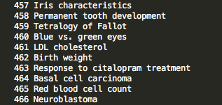
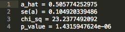
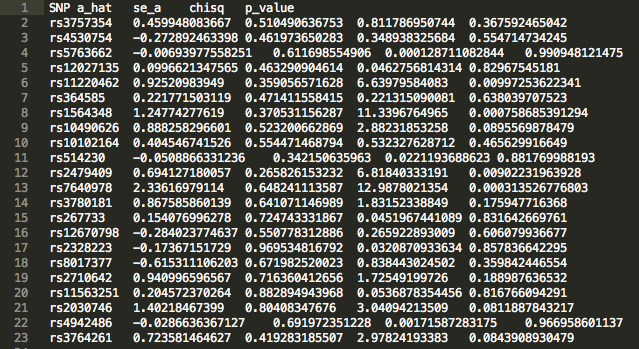

>>> import merp
>>> m = merp.Merp()
In this tutorial we will address the following question: Does LDL cholestrol levels have a causal effect on the risk of Heart Attack?
Run this python command first in the package directory to pull latest NHGRI GWAS catalog and create a set of IV trait files in the directory /traitFiles along with an index file mapping traits to IDs in merp directory.
>>> m.pull()
Note
Frozen version of catalog and traitFiles from 7/14/14 included in package. Running gwas_pull.py will overwrite these files.
Browse the “index” file in the home directory to find ID numbers associated with traits of interest.
Example Index
Warning
MeRP pipeline is specifically designed for traits and biomarkers that are measured in log odds ratio (beta) and not in odds ratio in order to run the analysis with disease endpoints. Please keep this in my mind when selecting trait of interests.
Run update function with trait file(s) of interest to add in non-risk allele and assign directional values to the beta effects according to the units description. To update multiple files simultaneously, run the update() with ‘paths/to/traitFiles’ as separate arguments.
To update LDL cholesterol file, we run:
>>> m.update('traitFiles/461')
Note
update.py adds the non-risk allele to the IV file by accessing 1000genomes data.If an allele is not in the 1000 genomes data, the SNP will be printed and the non-risk allele of the SNP will be marked as missing in the #_update file as [NR]. The user has the option to manually enter this column for those SNPs or leave them out of the analysis.
>>> m.filter('traitFile/461_update', 'nhgri_similar.txt','pval_similar.txt']
- Output:
- Trait file filtered for SNPs with confounding associations added as : /traitFiles/461_updatefiltered
Note
The filter will not work if there are still [NR] non-risk alleles or other format issues. Users can input their own trait files in the filter as long as it is properly formatted. See Detailed Workflow for details on file formats.
These two helper files should be kept in the merp directory and consist of a list of items separated by new lines.
nhgri_similar.txt: list of traits that are found in NHGRI catalog that may be related to or similar to trait of interest but is not confounding.
Note
Run filter function once with blank nhgri_similar.txt file. The program will print out exclusions because of associations in NHGRI catalog. Select those that are similar to trait of interest and that you DON’T want SNPs to be tossed out for.
pval_similar.txt: list of column titles from data/v3abr_allmetabolic_pvals_v2.txt that are/are related closely to trait of interest. *change when move to server
Note
Run $ head -1 data/v3abr_allmetabolic_pvals_v2.txt to see all column headers before creating exclude.txt file. *change when move to server
As shown above, LDL Cholesterol, our include.txt file would contain traits found in NHGRI catalog related to LDL that were printed when first running filter(). Our exclude.txt file would contain “P_LDL” as worded in pval.txt file
While we use 1000 genomes SNP data to find non-risk alleles for SNPs, there are inevitably SNPs that are missing data. Due to this limitation, SNP lines with [NR] for non-risk allele should either be filled in with independent look up (dbSNP, etc.) or deleted before proceeding with filter().
Due to the current nature of the NHGRI GWAS catalog, there may be several different units, or variations on the same unit present in the filtered IVF. At the end of the filter, we output the different units that must be addressed before moving on to IV calculations. For accurate estimations using calc() the units must all agree. Users may acheive this by tossing out SNPs or applying appropriate conversions and manually editing beta and unit values in a text editor.
Note
The unit “units” most often means standard deviation units. As so s.d, sd, sd_%, etc. Be aware of these and use your best judgement when fixing units.
For the simplicity and the purposes of our tutorial, we delete SNP lines that are not in s.d (units) and those without non-risk allele in 1000 genomes data before proceeding to calculation. In general, this is NOT good practice for most accurate estimates of MR scores.
Lastly, we calculate the estimated causal effect of LDL cholesterol on cardiovascular disease (CVD) using our filtered trait IVF along with the provided CVD gwas summary file.
>>> m.calc('traitFile/123_update', 'data/cadiogwas.txt')
The two result files can be found at /traitFiles/461_updatefiltered_MR_result and /traitFiles/461_updatefiltered_MR_result_indiv.
461_updatefiltered_MR_result:
461_updatefiltered_MR_result_indiv:
We see that there is an estimated effect of 0.505 increase in log odds ratio (a_hat) with an increase in 1 standard deviation of LDL cholesterol levels. The p value is on the order of 10^-6, indicating a significant effect. This supports epidemiological observations.
{kind=link}
{kind=link}
{kind=link}